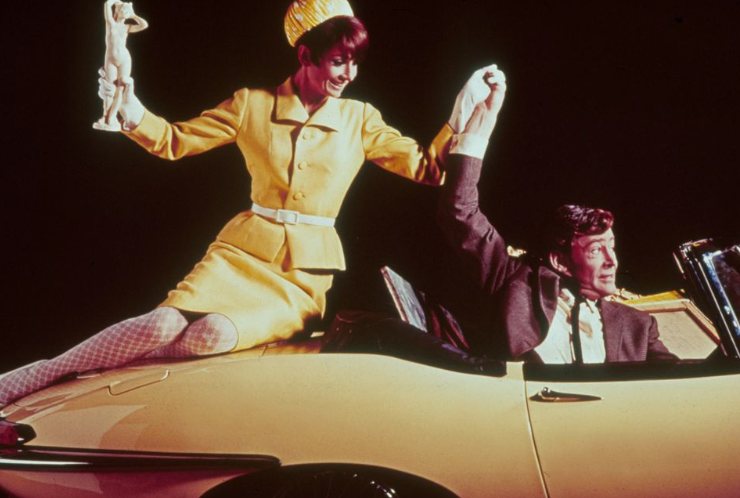
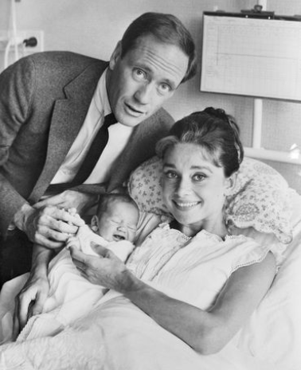

Career
Andrey Hepburn has earned several prestigious awards, including an Academy Award, BAFTA, and a Tony Award due to her excellence as an actress. Beyond the silver screen, her influence extended into the fashion industry, where her collaboration with designer Hubert de Givenchy defined an era and established her as a style icon. Audrey Hepburn's legacy transcends generations, symbolizing a perfect fusion of cinematic brilliance and timeless elegance in both film and fashion.

- Academy Award for Best Actress: Audrey Hepburn's remarkable portrayal of Princess Ann in the 1953 film "Roman Holiday" earned her the Academy Award for Best Actress, marking a pivotal moment in her career and establishing her as a Hollywood leading lady.
- Breakthrough Role in "Breakfast at Tiffany's": Hepburn's iconic role as Holly Golightly in the 1961 classic "Breakfast at Tiffany's"not only showcased her acting versatility but also became a cultural phenomenon, solidifying her status as a timeless and beloved film star.
- Tony Award for "Ondine": In addition to her success in film, Hepburn demonstrated her theatrical prowess by winning a Tony Award for Best Actress in a Play for her performance in the Broadway play "Ondine" in 1954, showcasing her versatility across different entertainment mediums.
Family
Katharine Hepburn, the iconic American actress, was born on May 4, 1929, in Hartford, Connecticut, into a well-to-do and socially prominent family. Her parents were Katharine Martha Houghton Hepburn and Dr. Thomas Norval Hepburn. Katharine was the second of six children, and her family played a significant role in shaping her upbringing.
In 1928, Katharine Hepburn married Ludlow Ogden Smith, a wealthy businessman. However, the marriage was short-lived and ended in divorce in 1934. Despite the dissolution of her first marriage, Hepburn continued to focus on her acting career and quickly became a leading lady in Hollywood.
One of the most notable chapters of her personal life unfolded when she began a relationship with actor Spencer Tracy, which started on the set of their first film together, "Woman of the Year" (1942). Despite never officially marrying, Hepburn and Tracy shared a deep and enduring companionship that lasted until Tracy's death in 1967. Their relationship was kept private due to Tracy's existing marriage and the societal norms of the time.

Fun Family Facts
- Dutch Aristocratic Roots: Audrey Hepburn was born into a Dutch aristocratic family, with her mother, Baroness Ella van Heemstra, being a descendant of French and Dutch nobility.
- World War II Resistance: Hepburn's family played a role in the Dutch resistance during World War II. Her parents were involved in various activities against the Nazi occupation in the Netherlands.
- Son's Humanitarian Work: Audrey Hepburn's son, Sean Hepburn Ferrer, continued her legacy of humanitarian work by co-founding the Audrey Hepburn Children's Fund, dedicated to helping children in need around the world.